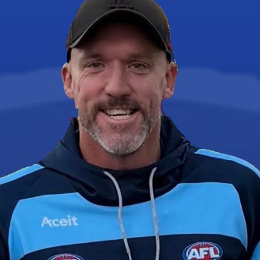
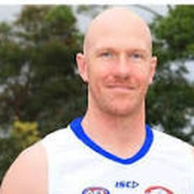

Jordan “Jordy” DoeringHead Coach
Former Carlton player and two-time VFL club champion. Coaching since 2007, including two seasons as senior coach of Ainslie in Canberra. Read Jordy's story →
Contact the coach →Assistant coaches
- Jake BrownAssistant coach

Kieran EmeryAssistant coach
SFL · Sydney Football League
Men's Premier
Our flagship men's side, in the first season of the Sydney Football League.
- Training
- Tuesdays & Thursdays, 6:30-8:30pm, David Phillips South
- Home games
- Henson Park, Marrickville
- Standard
- The top level of senior men's football in NSW. Selection is competitive and starts at pre-season.